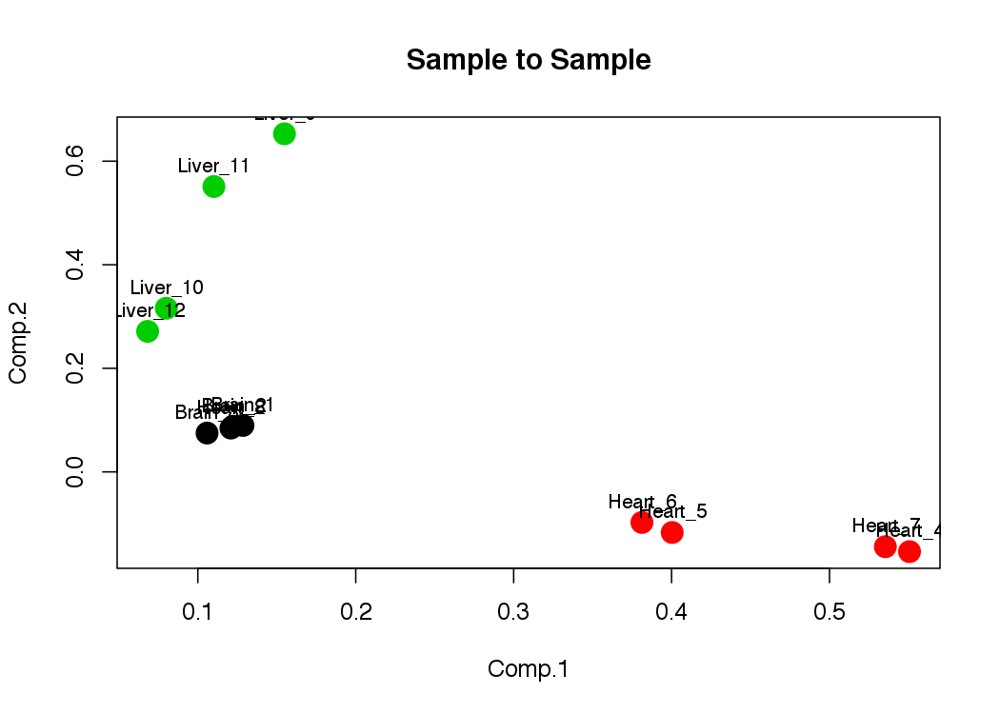
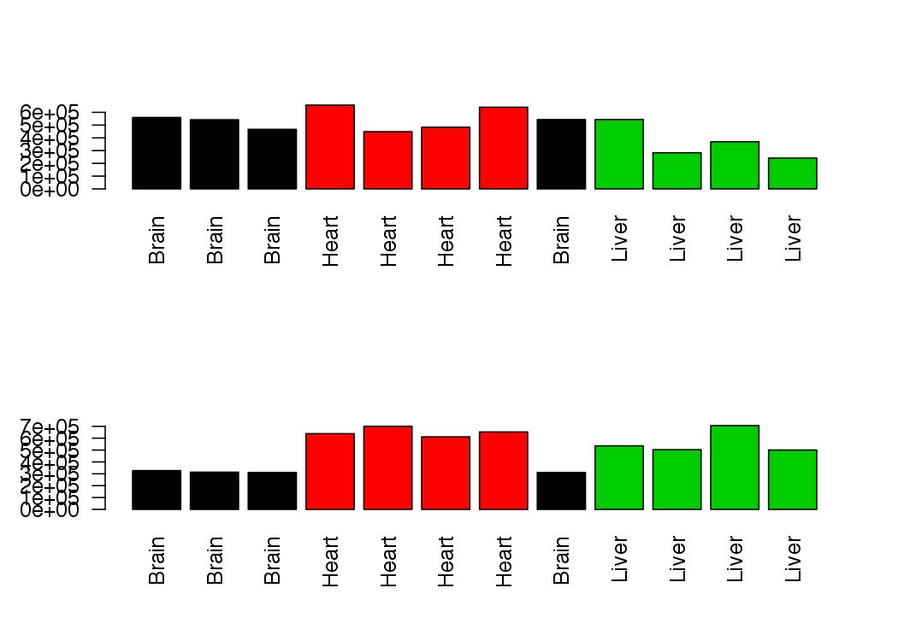
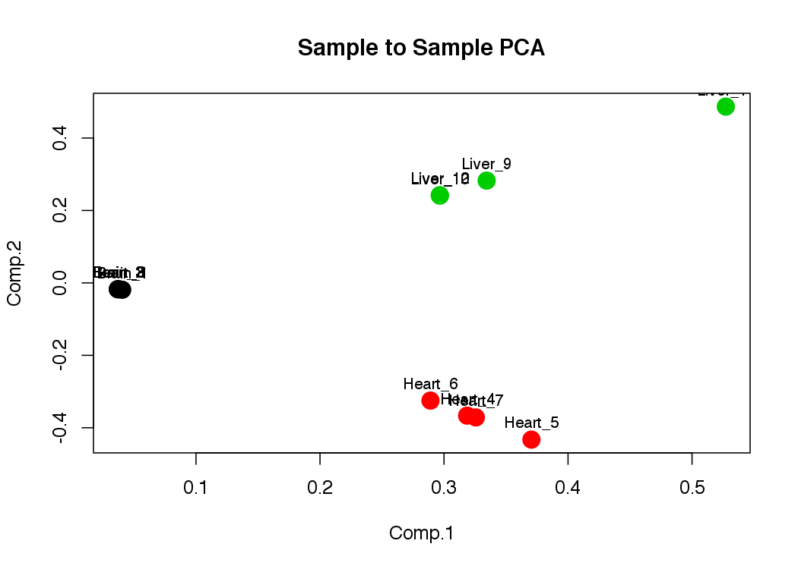
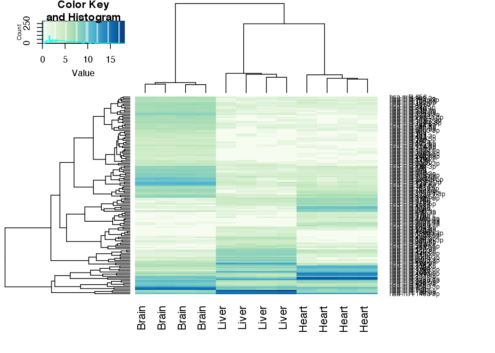

First we should change directory to where the data is
setwd("/Users/aje/Desktop/Courses-and-Practicals/EMBO_Greece_2017/small_RNA_seq/data")If you need the raw data for this practical, it is available here
library("DESeq2")
library("gplots")
library("RColorBrewer")
# Make a color scheme for heatmaps
hmcol = colorRampPalette(brewer.pal(9, "GnBu"))(100)We will load in the counts obtained from BLAST of cleaned reads against miRBase mature human sequences
mircounts <- read.table("mircounts.txt",header=TRUE,row.names=1)
# We want to remove the last line of the mircounts file
mircounts <- mircounts[-nrow(mircounts),]
# We need to tell R which samples were from which tissues
samplenames <- c("Brain", "Brain", "Brain", "Heart", "Heart", "Heart", "Heart", "Heart", "Liver", "Liver", "Liver", "Liver")
colnames(mircounts) = paste(samplenames, seq(1:12), sep="_")
head(mircounts)## Brain_1 Brain_2 Brain_3 Heart_4 Heart_5 Heart_6 Heart_7
## hsa-miR-1 1167 1911 1190 179717 129698 114090 164659
## hsa-miR-122-5p 145 349 156 295 95 187 155
## hsa-miR-9-5p 86907 98965 74695 444 124 296 239
## hsa-miR-143-3p 27598 23711 21600 78973 66404 68549 96678
## hsa-miR-148a-3p 2079 2053 1646 6637 4126 4034 6276
## hsa-miR-21-5p 8279 8322 7029 14414 9933 11397 14733
## Heart_8 Liver_9 Liver_10 Liver_11 Liver_12
## hsa-miR-1 1253 375 554 345 348
## hsa-miR-122-5p 183 157280 73426 145594 63610
## hsa-miR-9-5p 84410 136 256 134 137
## hsa-miR-143-3p 24126 16411 8800 10078 7491
## hsa-miR-148a-3p 1697 73860 40933 52708 32330
## hsa-miR-21-5p 6732 58983 28787 32407 26526First, lets see the total numbers of counts obtained for each sample. We will use the apply function to quickly sweep across the table and compute the column sums.
barplot(apply(mircounts,2,sum),col=as.factor(samplenames),las=2)Some of the samples look dramatically different to their replicates. We should investigate further by comparing samples to each other.
First we’ll do a pairwise plot of the log2 counts between all samples
pairs(log2(mircounts+1),main="Pair-wise sample to sample counts")Does anything look fishy about the data to you ?. Let’s look at how the samples correlate with each other. Obviously replicates should be very highly correlated with a standard Pearson correlation test.
pca <- princomp(mircounts)
plot(pca$loadings, col=as.factor(samplenames), pch=19, cex=2, main="Sample to Sample")
text(pca$loadings, as.vector(colnames(mircounts)), pos=3, cex=0.8)heatmap.2(cor(mircounts),trace="none",col=hmcol,main="Sample Correlation")Due to the sample-swap error we need to relabel the swapped samples
samplenames <- c("Brain", "Brain", "Brain", "Heart", "Heart", "Heart", "Heart", "Brain", "Liver", "Liver", "Liver" ,"Liver")Let’s double check things are now fixed
pca <- princomp(mircounts)
plot(pca$loadings, col=as.factor(samplenames), pch=19, cex=2, main="Sample to Sample")
text(pca$loadings, as.vector(colnames(mircounts)), pos=3, cex=0.8)
Clearly we need to normalise the data to control for differences in global RNA levels across samples.
DESeq is a statistical tool for analysis of count-based data such as from RNAseq. Microarrays and similar platforms produce ‘continuous’ data measurements, e.g. flourescence associated with a probe. However for count data the variance of results increases dramatically as you get low counts. For example, once a gene is lowly enough expressed that you only find small numbers of reads mapping to it you get very high variance as it is impossible to have half a count. For this reason it is imperative that count based sequencing data be normalised and statistically assessed with tools that take this into account. Tools like DESeq apply negative binomial statistics and try to flatten the variance across low and high counts.
# First we tell DESeq which samples correspond to which tissues.
conds = data.frame(samplenames)
colnames(conds)="tissue"
# Now we build a DESeq Count dataset and normalize it.
cds <- DESeqDataSetFromMatrix(countData = mircounts, colData = conds, design = ~ tissue)
cds <- estimateSizeFactors(cds)
cds <- estimateDispersions(cds)## gene-wise dispersion estimates## mean-dispersion relationship## final dispersion estimatescds <- nbinomWaldTest(cds)Now we will plot the dispersion information and fit.
plotDispEsts(cds)Lets see what effect our normalisation had
par(mfrow=c(2,1))
prenorm=apply(mircounts,2,sum)
barplot(prenorm,col=as.factor(samplenames),las=2,names=samplenames)
postnorm=apply(counts(cds,normalized=TRUE),2,sum)
barplot(postnorm,col=as.factor(samplenames),las=2,names=samplenames)
Lets do another Principal components analysis on the normalised data
pca <- princomp(counts(cds,normalized=T))
plot(pca$loadings, col=as.factor(samplenames), pch=19, cex=2, main="Sample to Sample PCA")
text(pca$loadings, as.vector(colnames(mircounts)), pos=3, cex=0.8)
Now we can use the negative-binomial test for each pairwise comparison of interest.
res1 = results( cds, contrast=c("tissue","Brain", "Heart"))
res2 = results( cds, contrast=c("tissue","Brain", "Liver"))
res3 = results( cds, contrast=c("tissue","Heart", "Liver"))
# Sort each result on Adjusted P-Value
res1<-res1[order(res1$padj),]
res2<-res2[order(res2$padj),]
res3<-res3[order(res3$padj),]
# Look at the first comparison
head(res1,50)## log2 fold change (MAP): tissue Brain vs Heart
## Wald test p-value: tissue Brain vs Heart
## DataFrame with 50 rows and 6 columns
## baseMean log2FoldChange lfcSE stat
## <numeric> <numeric> <numeric> <numeric>
## hsa-miR-128 9917.6289 4.716466 0.11809294 39.93859
## hsa-miR-378a-3p 12118.3791 -6.247371 0.09553713 -65.39207
## hsa-miR-499a-5p 7258.3710 -7.021495 0.07591700 -92.48910
## hsa-miR-133a 4807.4627 -7.940650 0.16459842 -48.24256
## hsa-miR-378d 928.9525 -6.269205 0.15571567 -40.26059
## ... ... ... ... ...
## hsa-miR-136-3p 162.83485 3.245716 0.1623744 19.98908
## hsa-miR-452-5p 75.61569 -4.610875 0.2325850 -19.82447
## hsa-miR-9-3p 227.13253 6.624428 0.3393934 19.51844
## hsa-miR-30b-5p 711.24239 -2.521038 0.1292027 -19.51226
## hsa-miR-744-5p 252.02968 2.541499 0.1316901 19.29909
## pvalue padj
## <numeric> <numeric>
## hsa-miR-128 0 0
## hsa-miR-378a-3p 0 0
## hsa-miR-499a-5p 0 0
## hsa-miR-133a 0 0
## hsa-miR-378d 0 0
## ... ... ...
## hsa-miR-136-3p 6.854389e-89 1.068391e-87
## hsa-miR-452-5p 1.830961e-87 2.793189e-86
## hsa-miR-9-3p 7.654455e-85 1.143384e-83
## hsa-miR-30b-5p 8.637456e-85 1.263889e-83
## hsa-miR-744-5p 5.466404e-83 7.838824e-82log2 fold change (MAP): tissue Brain vs Heart
Wald test p-value: tissue Brain vs Heart
DataFrame with 50 rows and 6 columns
baseMean log2FoldChange lfcSE stat pvalue padj
<numeric> <numeric> <numeric> <numeric> <numeric> <numeric>hsa-miR-128 9917.6289 4.716332 0.11968367 39.40664 0 0
hsa-miR-378a-3p 12118.3791 -6.247263 0.09765315 -63.97401 0 0
hsa-miR-499a-5p 7258.3710 -7.021408 0.07956721 -88.24500 0 0
hsa-miR-133a 4807.4627 -7.940515 0.16499010 -48.12722 0 0
hsa-miR-378d 928.9525 -6.269041 0.15687156 -39.96289 0 0
... ... ... ... ... ... ...
hsa-miR-136-3p 162.8349 3.245689 0.16159117 20.08581 9.821032e-90 1.603390e-88
hsa-miR-9-3p 227.1325 6.624195 0.33683195 19.66617 4.203540e-86 6.716720e-85
hsa-miR-27b-3p 20353.5151 -1.448201 0.07405947 -19.55457 3.771937e-85 5.901510e-84
hsa-miR-30b-5p 711.2424 -2.521019 0.12998167 -19.39519 8.474115e-84 1.298788e-82
hsa-miR-744-5p 252.0297 2.541474 0.13180332 19.28232 7.560116e-83 1.135529e-81Lets make some volcanoplots of each comparison
par(mfrow=c(1,3))
plot(res1$log2FoldChange,-log(res1$padj,10),main="Volcano Plot Brain vs Heart")
text(res1[1:20,]$log2FoldChange,-log(res1[1:20,]$padj,10),labels=rownames(res1[1:20,]),cex=0.7,pos=1)
legend("topleft","Brain",cex=0.5)
legend("topright","Heart",cex=0.5)
plot(res2$log2FoldChange,-log(res2$padj,10),main="Volcano Plot Brain vs Liver")
text(res2[1:20,]$log2FoldChange,-log(res2[1:20,]$padj,10),labels=rownames(res2[1:20,]),cex=0.7,pos=1)
legend("topleft","Brain",cex=0.5)
legend("topright","Liver",cex=0.5)
plot(res3$log2FoldChange,-log(res3$padj,10),main="Volcano Plot Heart vs Liver")
text(res3[1:20,]$log2FoldChange,-log(res3[1:20,]$padj,10),labels=rownames(res3[1:20,]),cex=0.7,pos=1)
legend("topleft","Heart",cex=0.5)
legend("topright","Liver",cex=0.5)par(mfrow=c(1,1))Let’s choose significant miRs for each contrast by log fold change and adj. P-value. Then we merge into a single list of significant hits and make a heatmap.
sig1 = rownames(res1[(abs(res1$log2FoldChange) > 4) & (res1$padj < 0.00001) & !is.na(res1$padj),])
sig2 = rownames(res2[(abs(res2$log2FoldChange) > 4) & (res2$padj < 0.00001) & !is.na(res2$padj),])
sig3 = rownames(res3[(abs(res3$log2FoldChange) > 4) & (res3$padj < 0.00001) & !is.na(res3$padj),])
# Merge to one list
siglist = unique(c(sig1,sig2,sig3))
# Generate Nice heatmap colours
hmcol = colorRampPalette(brewer.pal(9, "GnBu"))(100)
# Heatmap of significant hits
heatmap.2(log2(counts(cds[siglist,],normalized=TRUE)+1),col=hmcol,trace="none",labCol=samplenames,margin=c(5,10))
We can also make a more simplified heatmap of expression for 20 most significant hits from each comparison.
siglist=unique(c(rownames(res1[1:20,]),rownames(res2[1:20,]),rownames(res3[1:20,])))
heatmap.2(log2(counts(cds[siglist,],normalized=TRUE)+1),col=hmcol,trace="none",margin=c(5,10))